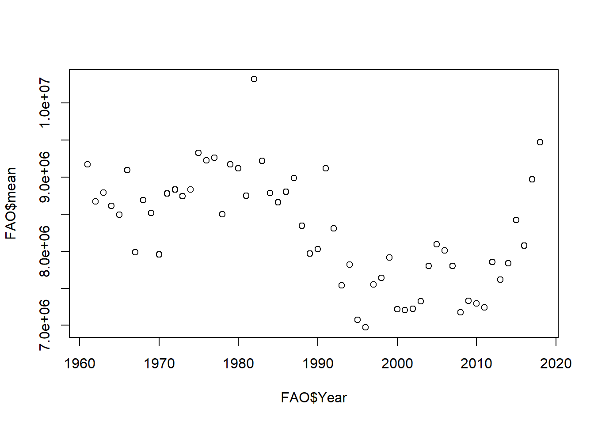

Code
library(tidyverse)
knitr::opts_chunk$set(echo = TRUE, warning=FALSE, message=FALSE)Will Munson
August 16, 2022
Today’s challenge is to
Read in one (or more) of the following data sets, available in the posts/_data folder, using the correct R package and command.
Add any comments or documentation as needed. More challenging data may require additional code chunks and documentation.
Using a combination of words and results of R commands, can you provide a high level description of the data? Describe as efficiently as possible where/how the data was (likely) gathered, indicate the cases and variables (both the interpretation and any details you deem useful to the reader to fully understand your chosen data).
So, essentially, this data is interpreting the value of livestock around the world. The values are either official or unofficial data, or FAO estimates.
The data has a total of over 82k slots. Value is the only quantitative variable. Each set of data was recorded between the years of 1961 and 2018. Domain Code Domain Area Code Area
Length:82116 Length:82116 Min. : 1.0 Length:82116
Class :character Class :character 1st Qu.: 73.0 Class :character
Mode :character Mode :character Median : 146.0 Mode :character
Mean : 912.7
3rd Qu.: 221.0
Max. :5504.0
Element Code Element Item Code Item
Min. :5111 Length:82116 Min. : 866 Length:82116
1st Qu.:5111 Class :character 1st Qu.: 976 Class :character
Median :5111 Mode :character Median :1034 Mode :character
Mean :5111 Mean :1018
3rd Qu.:5111 3rd Qu.:1096
Max. :5111 Max. :1126
Year Code Year Unit Value
Min. :1961 Min. :1961 Length:82116 Min. :0.000e+00
1st Qu.:1976 1st Qu.:1976 Class :character 1st Qu.:1.250e+04
Median :1991 Median :1991 Mode :character Median :2.247e+05
Mean :1990 Mean :1990 Mean :1.163e+07
3rd Qu.:2005 3rd Qu.:2005 3rd Qu.:2.377e+06
Max. :2018 Max. :2018 Max. :1.490e+09
NA's :1301
Flag Flag Description
Length:82116 Length:82116
Class :character Class :character
Mode :character Mode :character
Conduct some exploratory data analysis, using dplyr commands such as group_by(), select(), filter(), and summarise(). Find the central tendency (mean, median, mode) and dispersion (standard deviation, mix/max/quantile) for different subgroups within the data set.
# A tibble: 58 × 3
Year mean sd
<dbl> <dbl> <dbl>
1 1961 9172935. 22937872.
2 1962 8667943. 23653127.
3 1963 8787122. 24057267.
4 1964 8612111. 23824573.
5 1965 8492538. 23745915.
6 1966 9094943. 23326897.
7 1967 7984239. 22894441.
8 1968 8688126. 24101623.
9 1969 8518124. 24300499.
10 1970 7955016. 24019630.
# … with 48 more rows
# ℹ Use `print(n = ...)` to see more rowsI added a chart here to get a better understanding of how the mean official data has changed overtime. Just having the numbers here isn't as helpful as having a chart.
Be sure to explain why you choose a specific group. Comment on the interpretation of any interesting differences between groups that you uncover. This section can be integrated with the exploratory data analysis, just be sure it is included.
This specific group I chose involved sheep and official data. Since the value changes every year, I chose to take the average value and standard deviation of sheep for each year. What appears to be happening here is the mean is the average value of sheep appears to be relatively stagnant between the years 2000 and 2010. After 2010, the official data shows a major surplus in the value of sheep. ---
title: "Challenge 2 Will Munson"
author: "Will Munson"
desription: "Data wrangling: using group() and summarise()"
date: "08/16/2022"
format:
html:
toc: true
code-fold: true
code-copy: true
code-tools: true
categories:
- challenge_2
---
```{r}
#| label: setup
#| warning: false
#| message: false
library(tidyverse)
knitr::opts_chunk$set(echo = TRUE, warning=FALSE, message=FALSE)
```
## Challenge Overview
Today's challenge is to
1) read in a data set, and describe the data using both words and any supporting information (e.g., tables, etc)
2) provide summary statistics for different interesting groups within the data, and interpret those statistics
## Read in the Data
Read in one (or more) of the following data sets, available in the `posts/_data` folder, using the correct R package and command.
- railroad\*.csv or StateCounty2012.xlsx ⭐
- FAOstat\*.csv ⭐⭐⭐
- hotel_bookings ⭐⭐⭐⭐
```{r}
FAOstat <- read_csv("_data/FAOSTAT_livestock.csv")
```
Add any comments or documentation as needed. More challenging data may require additional code chunks and documentation.
## Describe the data
Using a combination of words and results of R commands, can you provide a high level description of the data? Describe as efficiently as possible where/how the data was (likely) gathered, indicate the cases and variables (both the interpretation and any details you deem useful to the reader to fully understand your chosen data).
So, essentially, this data is interpreting the value of livestock around the world. The values are either official or unofficial data, or FAO estimates.
The data has a total of over 82k slots. Value is the only quantitative variable. Each set of data was recorded between the years of 1961 and 2018.
```{r}
#| label: summary
summary(FAOstat)
```
## Provide Grouped Summary Statistics
Conduct some exploratory data analysis, using dplyr commands such as `group_by()`, `select()`, `filter()`, and `summarise()`. Find the central tendency (mean, median, mode) and dispersion (standard deviation, mix/max/quantile) for different subgroups within the data set.
```{r}
FAOstat %>%
group_by(Year) %>%
filter(Item == 'Sheep' & `Flag Description` == 'Official data') %>%
summarize(mean = mean(Value, na.rm = TRUE), sd = sd(Value, na.rm = TRUE))
```
I added a chart here to get a better understanding of how the mean official data has changed overtime. Just having the numbers here isn't as helpful as having a chart.
```{r}
FAO <- FAOstat %>%
group_by(Year) %>%
filter(Item == 'Sheep' & `Flag Description` == 'Official data') %>%
summarize(mean = mean(Value, na.rm = TRUE), sd = sd(Value, na.rm = TRUE))
plot(x = FAO$Year, y = FAO$mean)
```
### Explain and Interpret
Be sure to explain why you choose a specific group. Comment on the interpretation of any interesting differences between groups that you uncover. This section can be integrated with the exploratory data analysis, just be sure it is included.
This specific group I chose involved sheep and official data. Since the value changes every year, I chose to take the average value and standard deviation of sheep for each year. What appears to be happening here is the mean is the average value of sheep appears to be relatively stagnant between the years 2000 and 2010. After 2010, the official data shows a major surplus in the value of sheep.